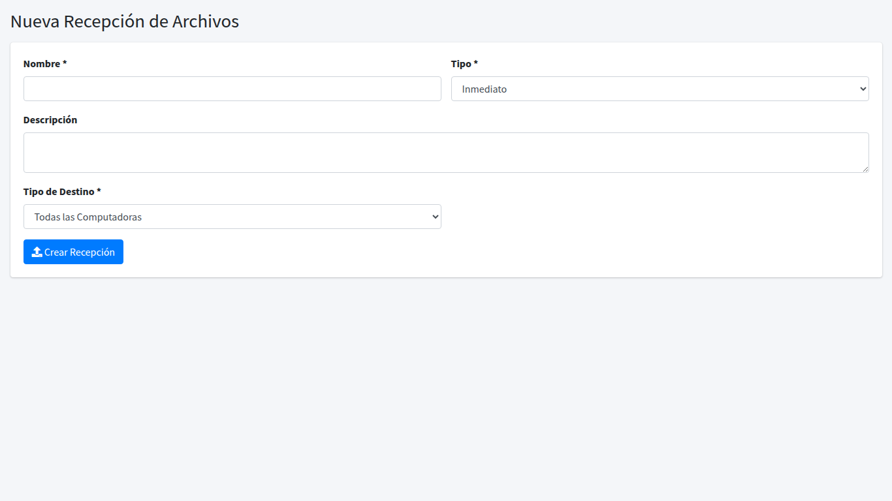
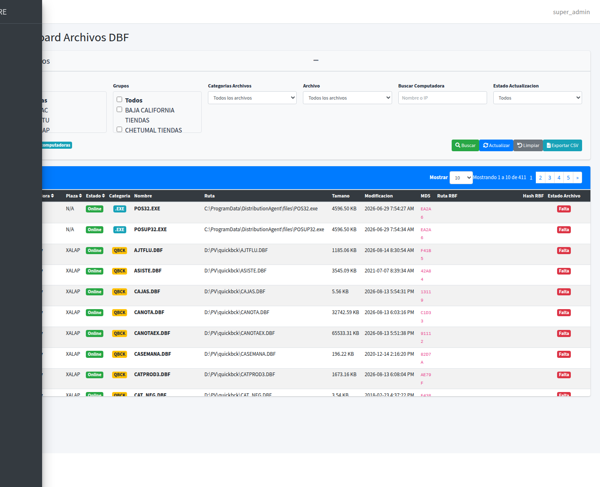
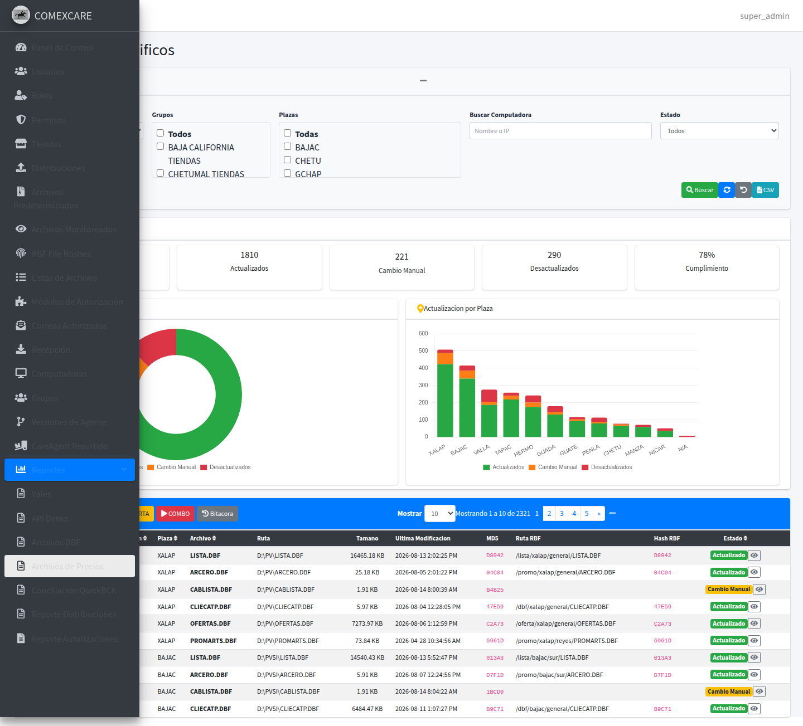
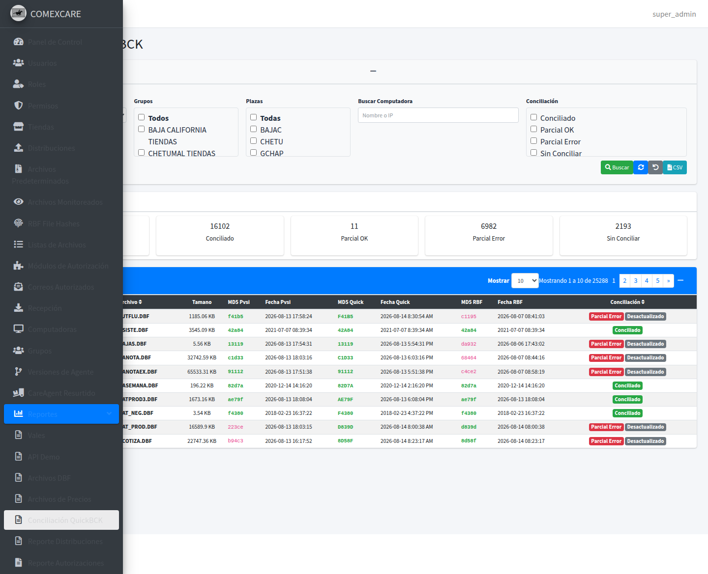
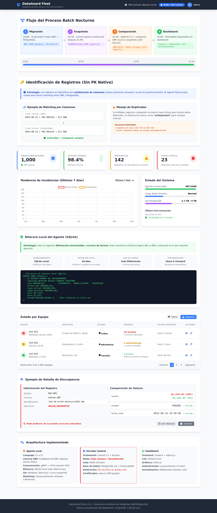
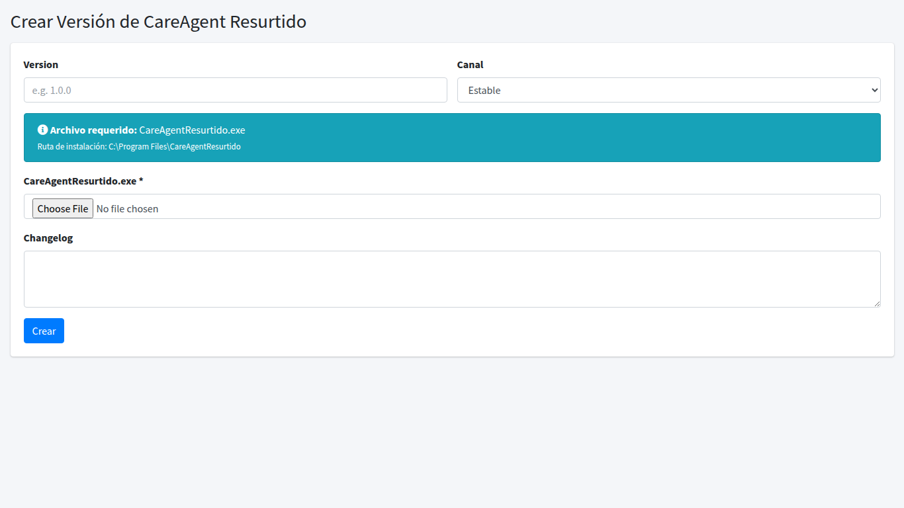

BITÁCORA DE CAMBIOS
Sistema COMEXCARE - Portal Administrativo
Resumen Ejecutivo de Actividades
14
Días de Trabajo
128
Commits
40+
Screenshots
15+
Módulos Afectados
70+
Archivos Nuevos/Modificados (Agosto)
📑 Contenido de la Bitácora
- Martes 08 de Abril, 2026 15:34 - 15:55 hrs
- Lunes 14 de Abril, 2026 19:17 hrs
- Martes 15 de Abril, 2026 02:06 - 08:01 hrs
- Jueves 17 de Abril, 2026 14:52 hrs
- Martes 16 de Junio, 2026 11:50 - 21:25 hrs
- Miércoles 17 de Junio, 2026 07:37 hrs
- Viernes 26 de Junio, 2026 15:13 hrs
- Viernes 03 de Julio, 2026 12:48 hrs
- Jueves 06 de Agosto, 2026 ~16:28 - 16:43 hrs
- Viernes 07 de Agosto, 2026 ~11:28 - 16:23 hrs
- Martes 11 de Agosto, 2026 Creación archivos sistema
- Miércoles 12 de Agosto, 2026 15:37 - 15:59 hrs
- Jueves 13 de Agosto, 2026 Cambios no commiteados (working tree)
- Viernes 14 de Agosto, 2026 16:30 - 17:10 hrs
- 📸 Galería de Módulos y Reportes
📅 Martes 08 de Abril, 2026
🕐 15:34 - 15:55 hrs
FEATURE
Reporte Vendedores B2B/VDT con filtro asesores_vvt
Se creó un nuevo reporte de vendedores B2B/VDT que permite filtrar por asesores del catálogo
asesores_vvt.
Incluye exportación a Excel y vista con DataTables.
Archivos nuevos:
app/Exports/VendedoresB2bExport.php
app/Http/Controllers/ReporteVendedoresB2bController.php
resources/views/reportes/vendedores_b2b/index.blade.php
Modificados:
app/Services/ReportService.php
config/adminlte.php (menú)
routes/web.php

Vista del Reporte Vendedores B2B/VDT
FIX
Corrección de URLs AJAX para reporte B2B + Middleware ReleaseDatabaseConnection
Se corrigieron las URLs AJAX del reporte B2B. Se agregó middleware
ReleaseDatabaseConnection
para mejorar rendimiento de conexiones. Se añadieron tablas de claves cortas para grupos (GroupShortKey).
Nuevos:
app/Http/Middleware/ReleaseDatabaseConnection.php
app/Models/GroupShortKey.php
database/migrations/2026_04_04_224834_add_short_key_to_groups_table.php
database/migrations/2026_04_04_225710_create_group_short_keys_table.php
Modificados:
app/Console/Commands/CheckComputerStatus.php
app/Http/Controllers/Api/AgentController.php
app/Http/Controllers/ComputersController.php
app/Http/Controllers/GroupsController.php
app/Models/Group.php
bootstrap/app.php
config/database.php
resources/views/admin/computers/index.blade.php
resources/views/admin/groups/index.blade.php
resources/views/admin/groups/show.blade.php (nueva)
resources/views/reportes/vendedores_b2b/index.blade.php
routes/api.php
routes/console.php
worker-single.conf

Módulo de Grupos - Mejorado

Módulo de Computadoras
FEATURE
Cálculo de devoluciones en reporte B2B
Se agregó el cálculo de devoluciones al reporte B2B, separando ventas y devoluciones en queries independientes para precisión.
Modificado: app/Services/ReportService.php
📅 Lunes 14 de Abril, 2026
🕐 19:17 hrs
FEATURE
Endpoint AgentController + Mejoras DBF Reports y Computers
Se añadió nuevo endpoint en AgentController para manejo de reportes de agente.
ComputersController se mejoró con logging de estado.
El reporte de archivos DBF ahora incluye filtros de búsqueda avanzados.
Modificados:
app/Http/Controllers/Api/AgentController.php
app/Http/Controllers/ComputersController.php
app/Http/Controllers/ReporteDbfFilesController.php
config/database.php
Vistas:
resources/views/admin/computers/index.blade.php
resources/views/reportes/dbf-files/index.blade.php
Rutas: routes/web.php

Reporte de Archivos DBF con filtros de búsqueda
Vista de Computadoras - Logging de estado activo
📅 Martes 15 de Abril, 2026
🕐 02:06 - 08:01 hrs
FIX
Null check en manejo de comandos de reporte
Corrección de validación null en el controlador de agente para evitar errores cuando no hay comando pendiente.
Modificado: app/Http/Controllers/Api/AgentController.php
FEATURE
Rediseño de vista Computadoras: diseño limpio, círculos de estado, icono Windows
Rediseño completo de la tabla de computadoras. Ahora usa círculos de estado en lugar de badges,
incluye icono de Windows, y está envuelta en una card con diseño limpio.
Modificado: resources/views/admin/computers/index.blade.php
Vista rediseñada de Computadoras - Diseño limpio

Detalle de Computadora
FEATURE
Soporte multi-archivo para versiones de Agente + Ajustes UI
El módulo de versiones de agente ahora permite asociar múltiples archivos a una misma versión.
Se ajustaron las vistas de creación e índice de versiones.
Modificados:
app/Http/Controllers/AgentVersionsController.php
app/Http/Controllers/Api/AgentController.php
app/Models/AgentVersion.php
app/Services/AgentUpdateService.php
Vistas:
resources/views/admin/agent-versions/create.blade.php
resources/views/admin/agent-versions/index.blade.php
resources/views/admin/computers/index.blade.php
resources/views/admin/distributions/index.blade.php
Docs: MANUAL_INSTALACION.md

Módulo Versiones de Agente - Soporte multi-archivo

Formulario Crear Versión de Agente
CHORE
Migraciones y Seeders para Tiendas, Permisos y Roles
Se crearon migraciones para la tabla
bi_sys_tiendas, se agregó columna grupo (TIENDA/VENDEDOR/ALMACEN),
se actualizó PermissionSeeder con todos los permisos de la base de datos.
Seeder de tiendas con las 548 tiendas reales.
Nuevos:
database/migrations/2026_04_15_000000_create_bi_sys_tiendas_table.php
database/migrations/2026_04_15_000001_add_grupo_column_to_bi_sys_tiendas.php
database/migrations/2026_04_15_000003_add_tipo_column_to_bi_sys_tiendas.php
database/seeders/BiSysTiendasSeeder.php (548 tiendas)
database/seeders/PermissionSeeder.php
database/seeders/RoleSeeder.php
app/Console/Commands/RestartDistribution.php
Modificados:
database/seeders/DatabaseSeeder.php
Docs:
MANUAL_INSTALACION.md
MODULOS_SISTEMA.md
📅 Jueves 17 de Abril, 2026
🕐 14:52 hrs
FEATURE
Nuevo Módulo de Vales + Reporte de Vales
Se creó el módulo completo de vales: modelo
Vale, migraciones con campos plaza y computer_id,
controlador Api/ValeController, y vista de reporte de vales con filtros.
Nuevos:
app/Models/Vale.php
app/Http/Controllers/Api/ValeController.php
app/Http/Controllers/ReporteValesController.php
app/Http/Controllers/MetricsController.php
resources/views/reportes/vales/index.blade.php
database/migrations/2026_04_16_000001_create_vales_table.php
database/migrations/2026_04_16_000002_fix_vales_string_types.php
database/migrations/2026_04_15_201058_add_tienda_id_to_computers_table.php
database/migrations/2026_04_15_205915_add_plaza_to_computers_table.php
database/seeders/UserSeeder.php
fix_tiendas.php
php.ini
Modificados:
app/Http/Controllers/Api/AgentController.php
app/Http/Controllers/ComputersController.php
app/Http/Controllers/HomeController.php
app/Http/Controllers/TiendasController.php
app/Http/Controllers/ReporteDbfFilesController.php
app/Models/AgentVersion.php
app/Models/Computer.php
app/Services/AgentUpdateService.php
config/adminlte.php
config/database.php
config/horizon.php
config/queue.php
database/seeders/AssignDefaultPermissionsSeeder.php
database/seeders/PermissionSeeder.php
database/seeders/RoleSeeder.php
resources/views/admin/computers/edit.blade.php
resources/views/admin/computers/index.blade.php
resources/views/admin/tiendas/index.blade.php
resources/views/home.blade.php
routes/api.php
routes/web.php

Reporte de Vales - Nuevo módulo
FEATURE
Actualizaciones de Reportes, Computadoras y Métricas
Se mejoró el HomeController con nuevas métricas. Se agregó MetricsController.
Se actualizaron las vistas de tiendas y computadoras con nuevos campos (tienda_id, plaza).
Se mejoró AdminLTE config con nuevos menús.
Nuevos: app/Http/Controllers/MetricsController.php
Modificados:
app/Http/Controllers/HomeController.php
app/Http/Controllers/ComputersController.php
app/Http/Controllers/TiendasController.php
config/adminlte.php
resources/views/home.blade.php
resources/views/admin/computers/edit.blade.php
resources/views/admin/computers/index.blade.php
resources/views/admin/tiendas/index.blade.php

Dashboard con nuevas métricas

Módulo de Tiendas actualizado

Asignación de Tiendas a Usuarios
📅 Martes 16 de Junio, 2026
🕐 11:50 - 21:25 hrs
DOCS
Documentación Completa del Proyecto (HTML + README)
Se generó documentación técnica completa del proyecto. Se creó
documentacion.html con navegación interactiva,
se actualizó README.md con instrucciones claras, y se añadió AGENTS.md para contexto de agentes de IA.
Se documentaron todos los controladores, servicios, modelos y flujos de trabajo.
Nuevos:
documentacion.html
AGENTS.md
PROMPT_AGENTE_RESURTIDO_COMPLETO.cs
public/info.php
Modificados:
README.md
.env.example
OPTIMIZATIONS_REPORT.php
README_OPTIMIZATIONS.php
create_tables.php
performance_advanced_test.php
performance_test.php
quick_performance_test.php
run_reports_test.php
test_7000_records.php
test_basic_functionality.php
test_performance_laragon.php
test_sql_fix.php
verificar_metas_matricial.php
Cambios masivos en:
Múltiples controladores, modelos, servicios con comentarios y documentación inline
DOCS
Manual de Usuario con Screenshots del Sistema
Se creó el manual de usuario completo (
public/docs-usuario.html) con capturas de pantalla de cada módulo del sistema.
Se tomaron screenshots de todas las pantallas principales: login, dashboard, usuarios, roles, permisos, computadoras, grupos,
distribuciones, recepciones, versiones de agente, versiones de resurtido, listas de archivos, reportes, tiendas, metas, etc.
Nuevos:
public/docs-usuario.html
37 screenshots en public/screenshots/
Categorías: Admin, Reportes, Configuración, Creación, Detalle

Pantalla de Inicio de Sesión
Dashboard Principal

Gestión de Usuarios

Gestión de Roles

Gestión de Permisos

Módulo de Distribuciones
📅 Miércoles 17 de Junio, 2026
🕐 07:37 hrs
DOCS
Resumen del Proyecto en Markdown + Módulo File Lists
Se creó
RESUMEN_PROYECTO.md con resumen ejecutivo del sistema.
Se desarrolló el módulo de Listas de Archivos (FileListsController, modelo FileList, migración)
para gestionar catálogos de archivos disponibles.
Se mejoró CheckComputerStatus command y se añadieron índices compuestos a tabla vales para rendimiento.
Nuevos:
RESUMEN_PROYECTO.md
app/Models/FileList.php
app/Http/Controllers/FileListsController.php
resources/views/admin/file-lists/index.blade.php
database/migrations/2026_06_02_063105_create_file_lists_table.php
database/migrations/2026_05_29_080214_add_composite_index_to_vales_table.php
database/migrations/2026_05_28_225407_fix_lcampo4_type_in_vales_table.php
public/vendor/icheck-bootstrap
Modificados:
app/Console/Commands/CheckComputerStatus.php
app/Http/Controllers/Api/AgentController.php
app/Http/Controllers/ComputersController.php
app/Http/Controllers/DistributionsController.php
app/Http/Controllers/HomeController.php
config/adminlte.php
documentacion.html
database/seeders/PermissionSeeder.php
database/seeders/RoleSeeder.php
resources/views/admin/computers/index.blade.php
resources/views/admin/distributions/index.blade.php
resources/views/admin/distributions/show.blade.php
resources/views/home.blade.php
routes/console.php
routes/web.php
tests/Feature/Http/Controllers/Api/AgentControllerTest.php

Módulo Listas de Archivos
📅 Viernes 26 de Junio, 2026
🕐 15:13 hrs
FEATURE
Script restore_data para importar computadoras y grupos desde Excel
Se creó
restore_data.php y script para importar masivamente computadoras y grupos desde archivo Excel/CSV.
Se añadieron comandos de consola: CleanDuplicateAgents, UpdateDownloadPaths.
Se creó toda la infraestructura del módulo Agent Defaults (categorías, archivos, rutas, descargas, asignaciones)
con migraciones, modelos, factories, vistas completas (CRUD) y controladores API.
Nuevos:
restore_data.php
COMPUTADORAS.xlsx
computadoras_2026-06-26_073919.csv
app/Console/Commands/CleanDuplicateAgents.php
app/Console/Commands/UpdateDownloadPaths.php
app/Console/Commands/SyncComputersFromCsv.php
app/Http/Controllers/AgentDefaultsController.php
app/Http/Controllers/Api/AgentDefaultsController.php
app/Http/Controllers/ReporteDistribucionesController.php
app/Models/AgentDefaultCategory.php
app/Models/AgentDefaultCategoryFile.php
app/Models/AgentDefaultCategoryRoute.php
app/Models/AgentDefaultDownload.php
app/Models/AgentDefaultRouteAssignment.php
database/migrations/2026_06_17_132140_create_agent_default_categories_table.php
database/migrations/2026_06_17_132140_create_agent_default_category_routes_table.php
database/migrations/2026_06_17_132140_create_agent_default_route_assignments_table.php
database/migrations/2026_06_17_132141_create_agent_default_category_files_table.php
database/migrations/2026_06_17_132141_create_agent_default_downloads_table.php
database/migrations/2026_06_19_120204_move_agent_default_files_to_routes.php
database/migrations/2026_06_19_130601_add_sync_fields_to_agent_default_downloads.php
database/migrations/2026_06_19_134933_change_is_active_to_integer_in_agent_default_categories.php
database/migrations/2026_06_20_094109_add_auto_sync_and_auto_validation_to_agent_default_categories.php
database/migrations/2026_06_22_081407_add_cancelled_status_to_commands_table.php
database/migrations/2026_06_26_093713_add_soft_deletes_to_distributions_table.php
database/migrations/2026_06_26_181829_make_mac_address_nullable_in_computers_table.php
database/factories/AgentDefaultCategoryFactory.php
database/factories/AgentDefaultCategoryFileFactory.php
database/factories/AgentDefaultCategoryRouteFactory.php
database/factories/AgentDefaultRouteAssignmentFactory.php
resources/views/admin/agent-defaults/create.blade.php
resources/views/admin/agent-defaults/edit.blade.php
resources/views/admin/agent-defaults/index.blade.php
resources/views/admin/agent-defaults/show.blade.php
resources/views/reportes/distribuciones/index.blade.php
agente-defaults-api.txt
modulo-agent-defaults.html
modulo-agent-defaults-preview.html
public/docs/dbf-report-api.html
Modificados:
app/Http/Controllers/Api/AgentController.php
app/Http/Controllers/ComputersController.php
app/Http/Controllers/DistributionsController.php
app/Http/Controllers/FileListsController.php
app/Http/Controllers/UserController.php
app/Http/Middleware/ReleaseDatabaseConnection.php
app/Jobs/ProcessScheduledDistributions.php
app/Models/Distribution.php
app/Services/DistributionService.php
config/adminlte.php
database/seeders/PermissionSeeder.php
database/seeders/RoleSeeder.php
resources/views/admin/computers/index.blade.php
resources/views/admin/distributions/create.blade.php
resources/views/admin/distributions/index.blade.php
resources/views/admin/groups/index.blade.php
resources/views/reportes/dbf-files/index.blade.php
routes/api.php
routes/web.php
Tests:
tests/Feature/AgentDefaultsTest.php
tests/Feature/Admin/GroupsControllerTest.php
tests/Feature/Http/Controllers/Api/AgentControllerTest.php
tests/Feature/Http/Controllers/DistributionsControllerTest.php
tests/Unit/Models/DistributionFileTest.php
tests/Unit/Models/DistributionTargetTest.php

Formulario Crear Grupo

Formulario Crear Distribución

Formulario Crear Recepción

Formulario Crear Recepción de Archivo

Detalle de Distribución
📅 Viernes 03 de Julio, 2026
🕐 12:48 hrs
FIX
Validación Whitelist/Blacklist en Distribuciones
Se corrigió la validación de whitelist y blacklist en el módulo de distribuciones.
Ahora se valida correctamente que los archivos cumplan con las reglas de inclusión/exclusión
antes de procesar la distribución.
Modificados:
app/Http/Controllers/DistributionsController.php
app/Services/DistributionService.php
resources/views/admin/distributions/create.blade.php
resources/views/admin/distributions/index.blade.php
resources/views/admin/distributions/show.blade.php
Tests: tests/Feature/Http/Controllers/DistributionsControllerTest.php
Módulo de Distribuciones - Validación corregida
📅 Jueves 06 de Agosto, 2026
🕐 ~16:28 - 16:43 hrs
DOCS
Planificación API Conciliación Hash Archivos (.opencode/plans/)
Se creó documentación de planificación técnica para la API de conciliación de hashes de archivos:
contrato de API, descripción de comandos, y documentación Postman para pruebas de endpoints.
Nuevos (en .opencode/plans/):
API_CONTRATO.md
COMANDOS_Y_DESCRIPCION.md
POSTMAN_HASH_ARCHIVOS.md
FEATURE
API de Conciliación Hash Archivos - Fase 1: Backend
Se desarrolló la primera fase de la API de conciliación de hashes de archivos.
Permite registrar lotes de hashes enviados desde las tiendas (sucursales) y validar
la integridad de archivos mediante MD5. Incluye rate limiting, autenticación por API Key,
y manejo de payloads JSON grandes (hasta 10MB configurable).
Nuevos:
app/Http/Controllers/Api/HashArchivoController.php
- registrarLote(Request): registra un lote masivo de archivos con hashes
- registrar(Request): registre un hash individual
- process(): procesa y almacena datos de tiendas, archivos, md5, fechas
- storeInvalid(): almacena peticiones inválidas para auditoría
app/Http/Middleware/HashArchivoApiKey.php
- Autenticación via header X-API-Key contra config services.conciliacion.hash_archivos_api_key
- Usa hash_equals() para timing-attack safe comparison
- Mascara la key en logs (maskKey)
app/Http/Middleware/HashArchivoRateLimit.php
- Rate limiting por cliente (IP o key mascarada)
- Headers X-RateLimit-Limit, X-RateLimit-Remaining
- Retry-After en respuesta 429
app/Models/HashArchivoLote.php
- Campos: cliente, sucursal, nombre_carpeta, ruta_base, fecha_envio,
disparador, num_archivos, peso_total, estado, payload, errores, ip, user_agent
app/Models/ConciliacionHashArchivo.php
- Campos: sucursal, archivo, md5, md5_completo, fecha_modificacion,
disparador, fecha_consulta_api
database/migrations/2026_08_06_100000_create_hash_archivos_lotes_table.php
- Tabla hash_archivos_lotes con todos los campos del lote
database/migrations/2026_08_06_100001_add_md5_completo_to_conciliacion_hash_archivos_table.php
- Agrega columna md5_completo a tabla existente de conciliación
Modificados:
config/services.php
- Nuevos parámetros: conciliacion.hash_archivos_api_key,
conciliacion.hash_archivos_rate_limit (default 30),
conciliacion.hash_archivos_max_lote_bytes (default 10MB)
TEST
Feature Tests para RbfFileHash Model y Sync Functionality
Se agregaron pruebas automatizadas para el modelo
RbfFileHash
y la funcionalidad de sincronización de archivos desde el endpoint RBF.
Se validan la obtención de datos, parsing de paths, y persistencia en base de datos.
Nuevos:
tests/Feature/RbfFileHashServiceTest.php
Modificados:
tests/Pest.php (configuración base de tests)
📅 Viernes 07 de Agosto, 2026
🕐 ~11:28 - 16:23 hrs
TEST
Feature Tests para API HashArchivoController
Se crearon tests de Feature para validar todos los endpoints de la API de conciliación de hashes:
autenticación con API Key, rate limiting, registro de lotes, manejo de JSON inválido,
validación de campos obligatorios (Tiendas, Archivos, MD5), y almacenamiento correcto en base de datos.
Nuevos:
tests/Feature/Api/HashArchivoControllerTest.php
- test_requiere_api_key
- test_rechaza_api_key_invalida
- test_rate_limiting
- test_registrar_lote_valido
- test_registrar_lote_json_invalido
- test_registrar_lote_sin_campo_tiendas
- test_registrar_hash_individual_valido
- test_valida_md5_formato
CHORE
Actividad del Sistema - Distribuciones en Producción
El sistema procesó distribuciones activas entre las 16:22 y 16:23 hrs,
generando archivos ejecutables (.exe), configuraciones (.json), y logs de distribución (.txt)
en el storage de distribuciones. Indica operación activa del sistema en producción.
Archivos generados (storage/app/public/distributions/):
dJdfnSofnXmxqLJfAJ5uBvqSlD1n9HTGm23CXf92.exe
95ixag6JEcFWbkwkkA5Q7eLcvIlQqVOGvxSHYNse.exe
faW3ODyeoWcwB3ZpEl1bIdrGdmuVH5PEjjkFPgBL.json
lIqPthpByUqHBM3RGMZf1FHlAGRuVgNEm1xbsqFP.txt
4Flpeuxnh5gpX8P9tc3EnME50Ef0jQ0e7kcYlrG6I.txt
yA9tmM4l7azzATFy2tT9AMeW3rsSroIWkHTRPgb8.txt
IBFPJf15fhA1YeslhgXT5P2P7lLFJqOq5UPEUNte.txt
RWmJ7eQP5eA4UPRJXWexkT73OTUXJcc8hIj3Gpf1.txt
TYH892GkoJNHcf7GgKzeZJhyFzeQuHj0YxCLw39k
IR0Y0PvHMmZzhnmqKe5DzTbNoX8aYt9SCU8qgdzi.txt
jm5pYPsNJbkM9qtBgmotwix5LQ8hLsry6vmhBhf3.txt
CHORE
Actualización de variables de entorno (.env)
Se actualizó el archivo
.env con configuraciones del sistema (timestamps de modificación actualizados).
Modificado: .env
📅 Martes 11 de Agosto, 2026
🕐 Creación de archivos en sistema
FEATURE
Módulo Archivos Monitoreados (Monitored Files)
Se creó el módulo completo de Archivos Monitoreados, que permite configurar qué archivos y rutas
debe monitorear el agente de cada computadora o grupo. Reemplaza la lista hardcodeada del agente
con una configuración dinámica entregada desde el servidor vía API.
Soporta rutas generales (para todos), por grupo, o por computadora específica.
Incluye soporte para múltiples nombres de archivo por ruta, búsqueda recursiva, y orden personalizado.
Nuevos - Migraciones (3):
database/migrations/2026_08_11_000001_create_monitored_files_table.php
- Campos: id, computer_id (FK nullable), group_id (FK nullable), path,
file_name (nullable), recursive (smallint/boolean), sort_order, timestamps
- Índices: [computer_id, sort_order], [group_id, sort_order]
database/migrations/2026_08_11_000002_add_general_to_monitored_files_table.php
- Agrega columna general (boolean/smallint) para marcar entradas globales
database/migrations/2026_08_11_000003_add_file_names_to_monitored_files_table.php
- Agrega columna file_names (JSON/array) para múltiples archivos por ruta
- Elimina columna file_name anterior (reemplazo)
Nuevos - Modelo:
app/Models/MonitoredFile.php
- Relaciones: belongsTo Computer, belongsTo Group
- Método toConfigEntries(): expande el registro en entradas de configuración para el agente
- Casts: general (boolean), recursive (boolean), sort_order (integer), file_names (array)
Nuevos - Controlador:
app/Http/Controllers/MonitoredFilesController.php
- index(): lista paginada con relaciones computer/group, filtros disponibles
- store(): crea registro validando general/computer_id/group_id mutuamente excluyentes
- update(): edita registro existente
- destroy(): elimina registro
- validateRecord(): validación de reglas de negocio
- recordPayload(): construye payload para create/update
Nuevos - Command:
app/Console/Commands/SeedDefaultMonitoredFiles.php
- Signature: monitored-files:seed-defaults {--group=}
- Asigna la lista predeterminada de archivos a todos los grupos o a uno específico
Nuevos - Seeder:
database/seeders/DefaultMonitoredFilesSeeder.php
- Lista predeterminada de 6 rutas archivos que reporta el agente:
1. D:\PVSI\AJTFLU_RESUMEN -> ConciliacionApp.exe
2. comex_id -> pvsi_bepartners.exe
3. ResurCARE/CareAgentResurtido -> *.EXE (recursivo)
4. . -> *.DBF, *.EXE, *.CDX
5. MODEM/ATM -> (todos, sin filtro)
6. quickbck -> *.DBF
Nuevos - Vistas:
resources/views/admin/monitored-files/index.blade.php
- Tabla paginada con filtros, badges general/grupo/computadora
- Modal de creación y edición inline
- Botón "Lista predeterminada" para ejecutar seeder
- Confirmación de eliminación
resources/views/admin/monitored-files/_form.blade.php
- Formulario reutilizable para create/edit
- Select dinámico: General / Grupo / Computadora
- Campos: path, file_names (tags input), recursive (switch), sort_order
Nuevos - Tests:
tests/Feature/Admin/MonitoredFilesAdminTest.php
- Test de acceso al índice, creación, edición, eliminación
- Validación de permisos (monitored-files.crear, .editar, .eliminar)
tests/Feature/Api/MonitoredFilesConfigTest.php
- Test de endpoint /api/computer/{id}/config entrega configuración de archivos monitoreados
- Valida estructura JSON de respuesta
📅 Miércoles 12 de Agosto, 2026
🕐 15:37 - 15:59 hrs
Nota: Los commits de Git de esta fecha (15:37 y 15:59) agrupan todo el trabajo realizado desde el 6 de agosto.
A continuación se detallan los archivos creados/modificados cuyo timestamp de filesystem corresponde al 12 de agosto.
FEATURE
Módulo RBF File Hashes - Sync desde endpoint externo + Subida manual
Se creó el módulo completo de RBF File Hashes para la conciliación de archivos DBF/EXE/BAT
contra un endpoint externo de RBF (camposreyeros.com). El servicio obtiene la lista de archivos
y sus hashes, los parsea por plaza/zona/path, y los sincroniza en la base de datos.
También permite subida manual de archivos con asignación de plaza desde el panel administrativo.
Nuevos - Migraciones (3):
database/migrations/2026_08_12_130333_add_manual_to_rbf_file_hashes_table.php
- Agrega columna manual (boolean, default false) con índice
database/migrations/2026_08_12_134845_change_manual_to_smallint_on_rbf_file_hashes.php
- Convierte manual a smallint para compatibilidad PostgreSQL (igual que agent_default_categories)
database/migrations/2026_08_12_151200_add_computer_created_index_to_computer_logs.php
- Índice compuesto [computer_id, created_at] en tabla computer_logs para rendimiento de queries
Nuevos/Actualizados - Modelo:
app/Models/RbfFileHash.php
- Campos: servicio, plaza, zona, path, name, hash, last_modified, last_sync, manual
- Factory HasFactory para tests
Nuevos - Servicio:
app/Services/RbfFileHashService.php
- fetchAndSync(): obtiene datos de https://rbf.camposreyeros.com/api/queryHashFileServicesJson
- Parsea path en segmentos: plaza, zona, path relativo
- Sincroniza en batch con updateOrCreate
- Retorna estadísticas: insertados, actualizados, errores
Nuevos - Controlador:
app/Http/Controllers/RbfFileHashesController.php
- index(): vista con lista de plazas disponibles
- store(): subida manual de múltiples archivos (hasta 20MB c/u)
- Asignación de plaza por archivo (array de plazas)
- Procesamiento con RbfFileHashService o directo para manuales
- Logs de operación
Nuevos - Vistas:
resources/views/admin/rbf-file-hashes/index.blade.php
- Tabla de hashes por plaza con filtros
- Formulario de subida masiva de archivos (drag & drop)
- Indicadores manuales vs automáticos
- Estadísticas de conciliación
Nuevos - Tests:
tests/Feature/RbfFileHashServiceTest.php
tests/Feature/RbfFileHashesControllerTest.php
FEATURE
Reporte DBF Files mejorado: Soporte archivos DBF y QBCK (QuickBackup)
Se amplió el reporte de archivos DBF para soportar archivos
.DBF y la categoría especial
QBCK (quickbck). Se mejoraron las estadísticas por categoría, se agregó filtro por nombre de archivo,
y se corrigió la validación de tipos de archivo permitidos.
Modificados:
app/Http/Controllers/ReporteDbfFilesController.php
- isValidDbfFile(): ahora acepta EXE, BAT, DBF
- getFileCategory(): nueva categoría 'dbf' y 'qbck' (quickbck)
- data(): estadísticas globales incluyen dbf y qbck
- Filtro por nombre de archivo (archivo= param)
resources/views/reportes/dbf-files/index.blade.php
- Actualizada para mostrar categorías DBF y QBCK
- Nuevos filtros de búsqueda
Nuevos - Reportes específicos:
app/Http/Controllers/ReporteDbfFilesEspecificosController.php
app/Http/Controllers/ReporteDbfFilesQuickbckController.php
resources/views/reportes/dbf-files-especificos/index.blade.php
resources/views/reportes/dbf-files-quickbck/index.blade.php
Nuevos - Tests:
tests/Feature/ReporteDbfFilesControllerTest.php
tests/Feature/ReporteDbfFilesTest.php
tests/Feature/ReporteDbfFilesEspecificosControllerTest.php
tests/Feature/ReporteDbfFilesQuickbckControllerTest.php
FEATURE
Login mejorado: Efecto sonoro "Relincho de Caballo" (WebAudio API)
Se agregó un efecto sonoro de relincho de caballo sintetizado con WebAudio API al enviar el formulario de login.
Incluye: oscilador sawtooth, vibrato, tremolo de amplitud, filtro bandpass nasal, y envelope de volumen.
El submit se retrasa 800ms para que se escuche el sonido antes de redirigir.
También se actualizaron los assets visuales del login con imágenes del caballo (spirit/ caballo.png).
Modificados:
resources/views/auth/login.blade.php
- Función playNeigh(): síntesis de relincho con WebAudio API
- Event listener en submit del form que reproduce el sonido
- setTimeout de 800ms antes del submit real
resources/views/layouts/app.blade.php
resources/views/welcome.blade.php
resources/views/errors/minimal.blade.php
resources/views/mcp/authorize.blade.php
- Ajustes menores de layout y estilos
Nuevos assets:
public/caballo.png
public/favicon.gif / public/favicon.ico
public/spirit/1.png a public/spirit/12.png (12 imágenes del caballo)
spirit/1.png a spirit/12.png (copias en raíz)
TEST
Feature Tests para Monitored Files y Hash Archivos API
Se agregaron pruebas de Feature para el módulo de Archivos Monitoreados (CRUD admin, configuración API para agente)
y para la API de Hash Archivos (autenticación, rate limiting, lotes, registros individuales).
Nuevos tests:
tests/Feature/Admin/MonitoredFilesAdminTest.php
tests/Feature/Api/MonitoredFilesConfigTest.php
tests/Feature/Api/HashArchivoControllerTest.php
tests/Feature/RbfFileHashServiceTest.php
tests/Feature/RbfFileHashesControllerTest.php
tests/Feature/ReporteDbfFilesControllerTest.php
tests/Feature/ReporteDbfFilesTest.php
tests/Feature/ReporteDbfFilesEspecificosControllerTest.php
tests/Feature/ReporteDbfFilesQuickbckControllerTest.php
Modificados:
tests/Feature/Http/Controllers/Api/AgentControllerTest.php
tests/Feature/Http/Controllers/DistributionsControllerTest.php
tests/Pest.php
tests/Unit/Middleware/ApiRateLimiterTest.php
REFACTOR
Documentación movida/consolidada de .opencode/plans a raíz del proyecto
Se movieron/consolidaron múltiples documentos de planificación desde
.opencode/plans/ a la raíz del proyecto
para mejor acceso: AGENTS.md, RESUMEN_PROYECTO.md, MANUAL_INSTALACION.md, MODULOS_SISTEMA.md,
INSTALACION_LOCAL.md, INSTALACION_SERVIDOR.md, INSTRUCCIONES_AGENTE_DOTNET.md,
REPORTE_OPTIMIZACION_COMPLETA.md, CONTEXTUAL_MEJORADO.md, ANALISIS_COMPLETO_PROYECTO.md,
ANALISIS_MODULO_METAS.md. Se actualizó documentacion.html.
Movidos/renombrados:
.opencode/plans/AGENTS.md → AGENTS.md
.opencode/plans/RESUMEN_PROYECTO.md → RESUMEN_PROYECTO.md
.opencode/plans/MANUAL_INSTALACION.md → MANUAL_INSTALACION.md
.opencode/plans/MODULOS_SISTEMA.md → MODULOS_SISTEMA.md
.opencode/plans/INSTALACION_LOCAL.md → INSTALACION_LOCAL.md
.opencode/plans/INSTALACION_SERVIDOR.md → INSTALACION_SERVIDOR.md
.opencode/plans/INSTRUCCIONES_AGENTE_DOTNET.md → INSTRUCCIONES_AGENTE_DOTNET.md
.opencode/plans/REPORTE_OPTIMIZACION_COMPLETA.md → REPORTE_OPTIMIZACION_COMPLETA.md
.opencode/plans/CONTEXTUAL_MEJORADO.md → CONTEXTUAL_MEJORADO.md
.opencode/plans/ANALISIS_COMPLETO_PROYECTO.md → ANALISIS_COMPLETO_PROYECTO.md
.opencode/plans/ANALISIS_MODULO_METAS.md → ANALISIS_MODULO_METAS.md
Borrados de .opencode/plans/:
API_CONTRATO.md
COMANDOS_Y_DESCRIPCION.md
POSTMAN_HASH_ARCHIVOS.md
rbf-file-hashes-lookup.md
Modificados:
documentacion.html
.env.example
.user.ini
CHORE
Configuración Sync Automático a GitHub + Limpieza
Se configuró la sincronización automática del repositorio local hacia GitHub.
Se eliminaron archivos de prueba de sync. Se añadieron hooks/configuración para push automático.
Commits:
cf6999d / d49e3f1 - "Add feature tests for monitored files and hash archivos API" (15:37)
7b23b16 / f2a6a59 - "chore: configure automatic sync to GitHub" / "chore: remove sync test file" (15:59)
Cambios:
Configuración de hooks/push automático
Eliminación de archivos de prueba de sincronización
📅 Jueves 13 de Agosto, 2026
🕐 Cambios no commiteados (working tree)
Nota técnica: Estos cambios están en el working tree (modificados pero no commiteados al momento de generar esta bitácora).
WIP
Reporte DBF Files - Ajustes adicionales en controlador y vista
Ajustes continuos en el reporte de archivos DBF. Trabajo en progreso no commiteado.
Modificados (uncommitted):
app/Http/Controllers/ReporteDbfFilesController.php
resources/views/reportes/dbf-files/index.blade.php
WIP
Login - Ajustes del efecto sonoro y estilos
Ajustes continuos en la pantalla de login. Posibles refinamientos del efecto de relincho o estilos visuales.
Modificado (uncommitted):
resources/views/auth/login.blade.php
📅 Viernes 14 de Agosto, 2026
🕐 16:30 - 17:10 hrs
FEATURE
Reporte DBF Files - Filtros dinámicos por categoría, plaza-grupo y rediseño de la tabla
Se mejoró el reporte general de archivos DBF: el filtro de archivos ahora se vincula dinámicamente
con la categoría seleccionada (se ocultan/muestran los archivos según su categoría). Se añadió el mapa
plazaGroups para que los grupos de computadoras se filtren automáticamente según las plazas
seleccionadas (y viceversa al seleccionar "Todos"). Se eliminó el filtro de Hash MD5.
La tabla ahora tiene encabezado fijo (sticky), scroll interno, selector de registros por página (10/25/50/100)
en el encabezado de la tarjeta, y la tarjeta de filtros es minimizable.
Modificados:
app/Http/Controllers/ReporteDbfFilesController.php
- archivoCategorias: mapeo archivo → categorías válidas para el filtro dinámico
- plazaGroups: mapa plaza → IDs de grupo para filtrado cruzado
- getUniqueFiles(): ahora retorna [archivos, categorías]
- data(): resultados con ->values() para consistencia
resources/views/reportes/dbf-files/index.blade.php
- Filtro Archivo con data-cats por categoría (updateArchivoOptions)
- Filtro plaza ↔ grupo sincronizado (updateGroupVisibility)
- Eliminado filtro Hash MD5
- Selector "Mostrar" (10/25/50/100) y paginación en el header
- Encabezado de tabla fijo (sticky) con scroll interno (.table-scroll)
- Tarjeta de filtros minimizable (btn_toggle_filters)

Reporte DBF Files - Filtros dinámicos, sticky header y paginación
FEATURE
Reporte DBF Files Específicos - Filtro de archivo agrupado por tipo + UI compacta
El filtro de archivo del reporte específico ahora agrupa los archivos por tipo (LISTA, PROMOCION, OFERTA,
COMBO y OTROS) mediante
archivoGrupos; al seleccionar un grupo se expande internamente a sus
archivos DBF (resolveArchivoFilter). Se integró el mapa plazaGroups para el filtro
cruzado plaza ↔ grupo. Se reorganizó la UI: estadísticas y gráficas dentro de una tarjeta minimizable,
botones de ejecución (LISTA/PROMOCION/OFERTA/COMBO/Bitácora) en el encabezado de la tabla, selector de
registros por página, encabezado fijo y scroll interno.
Modificados:
app/Http/Controllers/ReporteDbfFilesEspecificosController.php
- getArchivoGrupos(): agrupa SPECIFIC_FILES por tipo (LISTA/PROMOCION/OFERTA/COMBO/OTROS)
- resolveArchivoFilter(): expande el grupo a sus archivos DBF
- plazaGroups: mapa plaza → grupos
- Aplicado en data() y export()
resources/views/reportes/dbf-files-especificos/index.blade.php
- Select de archivo agrupado por tipo
- Filtro plaza ↔ grupo sincronizado
- Estadísticas y gráficas en tarjeta minimizable
- Botones de ejecución en el header de la tabla
- Selector de páginas y paginación en el header
- Encabezado fijo (sticky) y scroll interno

Reporte DBF Files Específicos - Filtro agrupado por tipo
FEATURE
Reporte DBF Files QuickBCK - Filtro plaza ↔ grupo y rediseño de la tabla
Se agregó el mapa
plazaGroups al reporte de QuickBCK para sincronizar los grupos de computadoras
con las plazas seleccionadas. Las estadísticas de conciliación ahora se muestran en una tarjeta minimizable.
La tabla incluye encabezado fijo, scroll interno, selector de registros por página (10/25/50/100)
y paginación movida al encabezado de la tarjeta.
Modificados:
app/Http/Controllers/ReporteDbfFilesQuickbckController.php
- plazaGroups: mapa plaza → grupos para filtrado cruzado
resources/views/reportes/dbf-files-quickbck/index.blade.php
- Filtro plaza ↔ grupo sincronizado
- Estadísticas en tarjeta minimizable
- Selector de páginas y paginación en el header
- Encabezado fijo (sticky) y scroll interno

Reporte DBF Files QuickBCK - Filtros sincronizados y rediseño
CHORE
Nuevo dashboard.html de previsualización
Se agregó
dashboard.html en la raíz del proyecto: una previsualización estática/independiente
del dashboard para revisión sin necesidad de sesión. (Archivo nuevo sin versionar previamente).
Nuevo:
dashboard.html

Previsualización dashboard.html
FIX
Nuevo comando para recuperar comandos atascados (commands:recover-stuck)
Se agregó el comando
commands:recover-stuck que marca como fallidos los comandos que permanecen
en estado pending/sent/running sin actualización durante la ventana configurada
(por defecto 60 minutos). Añade una nota de timeout a la respuesta y registra completed_at.
Se programó en el scheduler para ejecutarse cada 5 minutos.
Nuevo:
app/Console/Commands/RecoverStuckCommands.php
- Signature: commands:recover-stuck {--minutes=60}
- Marca comandos atascados como failed con nota de timeout y exit_code -1
Modificado:
routes/console.php
- Schedule::command('commands:recover-stuck --minutes=60')->everyFiveMinutes()
📸 Galería de Módulos y Reportes del Sistema
Vista de Usuario
GALERÍA
Screenshots de todos los módulos del sistema
A continuación se muestran las capturas de pantalla de los módulos de reportes
que también fueron mejorados durante este periodo de trabajo.
Login COMEXCARE
Dashboard Principal
Gestión de Usuarios
Gestión de Roles
Gestión de Permisos
Módulo de Computadoras
Módulo de Grupos
Módulo de Distribuciones

Módulo de Recepciones
Versiones de Agente

Versiones de Resurtido
Listas de Archivos
Reporte DBF Files (mejorado Agosto 2026)
Reporte DBF Files (14 Ago 2026)
Reporte DBF Files Específicos (14 Ago 2026)
Reporte DBF Files QuickBCK (14 Ago 2026)
Reporte de Vales

Metas Mensuales

Reporte de Vendedores

Reporte de Metas

Cartera y Abonos

Compras Directo

Redenciones Club Comex
Formulario Crear Grupo
Formulario Crear Distribución
Crear Versión Agente

Crear Versión Resurtido
Crear Recepción
Crear Recepción de Archivo
Detalle de Computadora
Detalle de Distribución